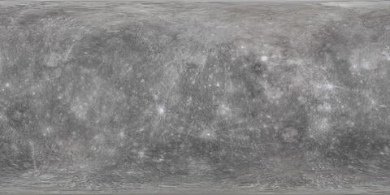
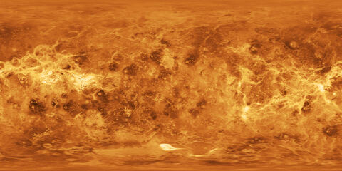
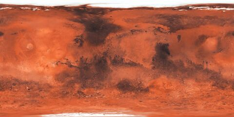

Sun
Solar System Scope. Not turned to the Sun's real rotation.
Every picture, catalogue and orbit in the demos, with its source, its licence and whether it can go public. The engine itself carries none of this. Each story brings its own.
The real stars and the Milky Way, behind every scene, placed by their true directions in space.
 MILKY WAY · ESO/S. BRUNIER
MILKY WAY · ESO/S. BRUNIER
J2000 positions, brightness and colour index. Fetched to this machine by a committed tool, never committed or shipped, because its terms aren't established as public domain.
CC BY 4.0, credit ESO/S. Brunier. Split into two halves at the galactic centre. Good to a few degrees, and soft beside the stars: a sharper one is on the wish list.
Maps wrapped around each body. Most are 2048×1024.
Solar System Scope. Not turned to the Sun's real rotation.

Solar System Scope, from NASA imagery.

Solar System Scope, the surface under the clouds.

NASA Blue Marble: Next Generation with topography and bathymetry, July 2004, 4096×2048.

NASA CGI Moon Kit (SVS 4720), LROC colour map with polar fill, 2048×1024.

Solar System Scope, resized from the 8k map.

Solar System Scope, 2048×1024.

USGS Galileo and Voyager mosaic.
The sources that place each body at any moment, and how far off they were when checked against NASA JPL.
Earth's spin and tilt from the IAU 2006 and 2000B models.
Open-source library
PublicCompared with JPL Horizons across 1969 to 2030.
Open-source library
PublicChecked against JPL Horizons (DE441) at six dates, 1969 to 2030. Rotation from the IAU 2015 report.
Published theory
PublicA simple model, checked against JPL Horizons. Good for showing, not for navigating.
JPL published values
PublicWhole 133-year orbit, out to 51 AU. Within 1% of its distance from the Sun at eight dates.
Within 11,000 km at the 2026 Geminid peak, 2% off near the Sun six years earlier.
Paths rebuilt between NASA's published anchor points, with 30 events timed to a tenth of a second.
Measured orbits, one per real meteor, and the published facts each shower is checked against.
Measured orbits from the CAMS camera network. Terms not yet confirmed, so CAMS is not the default source and stays on this machine until Dr. Jenniskens replies.
Same terms question as the Perseids.
CC BY 4.0. About 30,000 Perseids a year. The default source for the Perseids, public with credit. 25,588 orbits drawn (July and August 2025).
Peak solar longitude, radiant and speed from the IAU (J2000). Activity dates and peak rate from the American Meteor Society.
Published reference values
PublicThe methods under the pictures, and how each one was checked.
Every moment is converted once, in one place, so the Moon, the planets and the spacecraft all agree on what "now" means.
orb.js time scales
TestedPositions are held in one fixed sky frame (J2000) and converted for drawing. "Up" can be celestial north, or flat to the planets' plane.
IAU standards
TestedPlanets from a full published theory. Comets, asteroids and every meteor from classical orbital elements, solved per frame.
Bretagnon & Francou 1988
Checked vs JPLThe scene is re-centred on whatever you look at, so a body 51 AU out still sits still on screen. Measured: under a hundredth of a pixel of drift.
The peak is the moment the Sun reaches the published longitude. Pinned against NASA's Earth positions to within 0.005°.
A published quality cut: a wide enough viewing angle between cameras (15° or more) and a speed error of 10% or less. A switch between all and reliable.
The Perseid orbits pass closest to Earth 2.2 hours before the official peak. The radiant they imply is 0.04° from the IAU's, and the median speed of the members crossing near Earth is 58.75 km/s against the IAU's 58.8.
Where each meteor sits along its orbit today wasn't measured, so the dots are spread evenly and labelled illustrative. The bunch near the comet is a labelled model.
Shown in every info panel
LabelledThe credit lines each source asks for, word for word where they give one.
ESO/S. Brunier. eso0932a, eso.org/public/images/eso0932a. Changed: split in two and turned into the J2000 sky frame.
RequiredSolar System Scope (solarsystemscope.com/textures), based on NASA imagery and elevation data.
RequiredUSGS Astrogeology Science Center; NASA/JPL Galileo and Voyager missions.
CourtesyNASA Earth Observatory (Blue Marble: Next Generation, Reto Stöckli). July 2004 with topography and bathymetry, science.nasa.gov/earth/earth-observatory/blue-marble-next-generation. Changed: resampled to 4096×2048.
CourtesyNASA's Scientific Visualization Studio. CGI Moon Kit, svs.gsfc.nasa.gov/4720, LROC WAC colour map with polar fill. Changed: converted to JPEG.
CourtesyGlobal Meteor Network, globalmeteornetwork.org. Vida et al. 2020, MNRAS 491(2); Vida et al. 2021, MNRAS 506(4).
RequiredCAMS Meteoroid Orbit Database v3, P. Jenniskens, SETI Institute. Jenniskens et al. 2018, Planetary and Space Science 154.
WaitingJenniskens et al. 2020, Planetary and Space Science 182; Jopek & Kaňuchová 2017, Planetary and Space Science 143.
CiteYale Bright Star Catalogue, 5th revised edition, Hoffleit & Warren 1991, via CDS Strasbourg.
CiteNASA/JPL Horizons and Small-Body Database. orb.js by lizard-isana. VSOP87, Bretagnon & Francou 1988. IAU WGCCRE 2015 report, Archinal et al. 2018.
CiteSome code ideas (camera gestures, atmosphere glow, picture loading, info-panel layout) and the Mercury, Venus, Mars and Io pictures came from planetary-explorer.anipatke.com.
Own workNASA Apollo 11 Mission Report, MSC-00171 / SP-238.
CourtesyAmerican Meteor Society, Meteor Shower Calendar 2026/2027.
CiteGaps we know about.